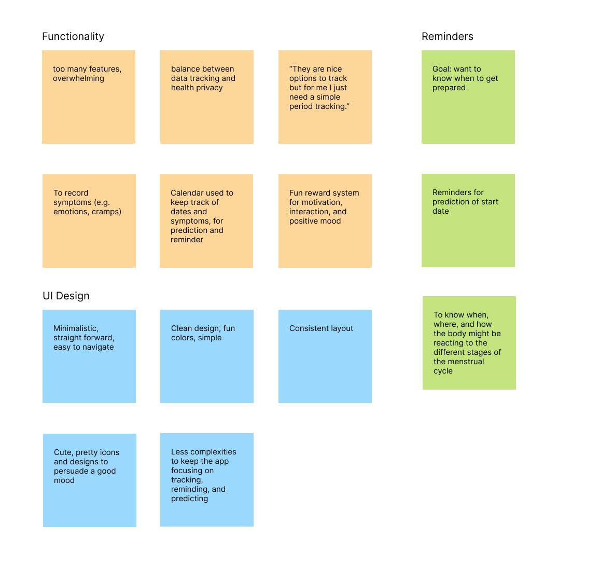
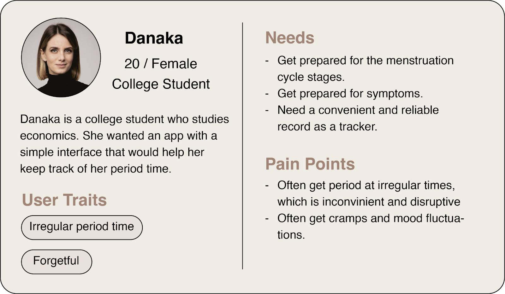
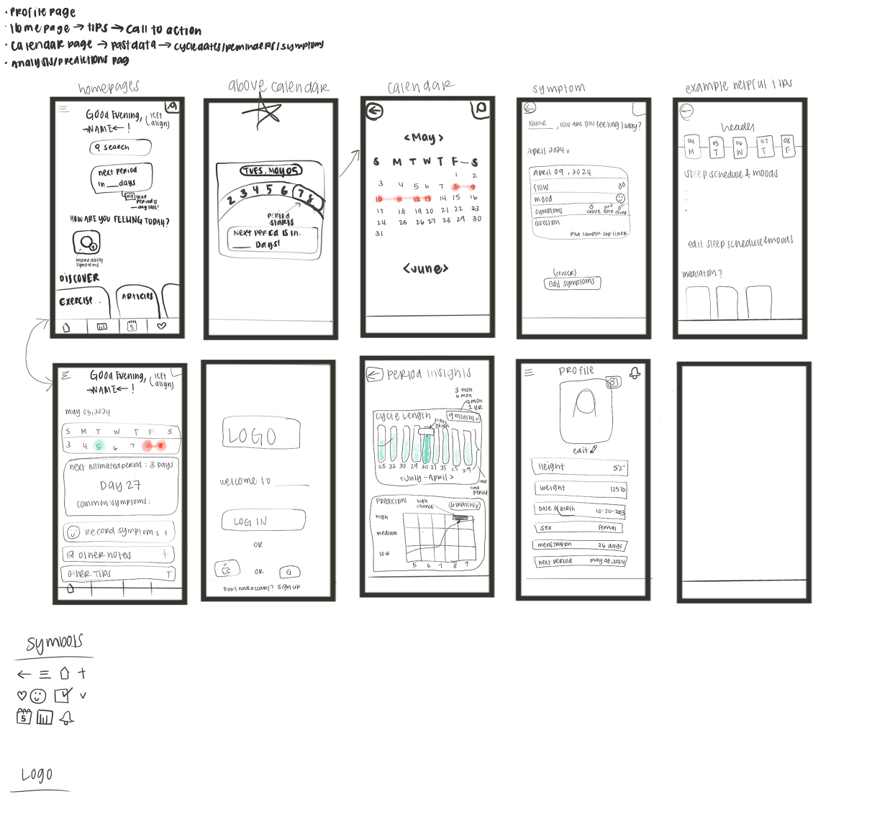
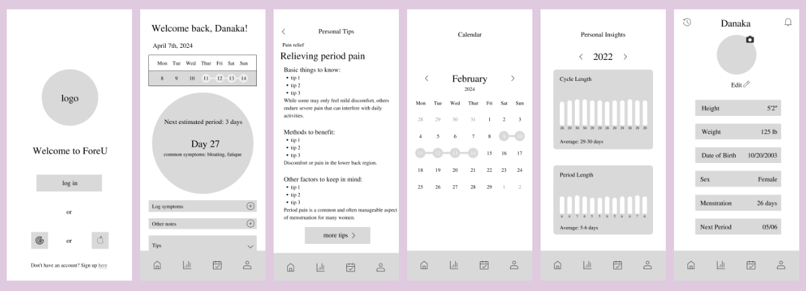

ForeU - A UX Case Study
Timeline
- Apr-May 2024
Software
- Figma
My Role
- Designer
Award
- Best User Research
Introduction
Menstruation tracking apps often overwhelm users with excessive features, dense information, and social content that detracts from their primary purpose. During a 3-week UI/UX design sprint in UC Davis Design Interactive, I worked with two other designers to address this issue.
ForeU is a minimalistic menstruation tracking app designed for college students who want a clear, visually soothing, and easy-to-use way to track and predict their menstrual cycle and symptoms.
The Challenge: How might we design an app for college students that tracks their interests in a clear and concise way?
Refined Design Question: How might we develop a menstruation tracking app that is minimalistic and visually appealing, while allowing users to easily track and predict their cycle and symptoms?
Research
Research Methods
- We used a mixed-methods research approach to understand how users currently interact with menstruation and habit-tracking apps. Our research included:
- Survey
- Competitive Analysis
- User Interviews with existing app users
- Affinity mapping to synthesize insights
Key Research Data and Findings
The survey revealed that participants most commonly tracked health-related habits such as menstruation cycles, exercise, and general wellness. When asked about improvements they wanted in a new app, users consistently emphasized fewer features, clearer visual elements, simpler interactions, and a clean, visually appealing design. Nearly half of respondents expressed a preference for apps that focus on tracking a single habit rather than serving as an all-in-one habit tracker, highlighting a desire for clarity and specificity.
Our competitive analysis examined several existing apps, including Habit, Flo, and Clue, to identify usability issues and design gaps. The Habit app presented challenges due to its confusing layout and inconsistent iconography, such as multiple calendar views showing overlapping information and unclear gear icons that led to different destinations. Flo was frequently described as overwhelming because of excessive features, pop-up ads, and persistent upgrade prompts. Users reported that constant notifications increased anxiety and caused them to anticipate their period too often. While Clue was appreciated for its minimal aesthetic and core tracking functionality, users felt that navigation required too many steps for simple tasks and that added features over time reduced usability.
User interviews reinforced these findings and provided deeper insight into emotional responses to health-tracking apps. Several participants explained that they chose menstruation-tracking apps primarily to manage irregular periods, valuing simplicity, ad-free experiences, and customizable reminders. Some users ultimately abandoned specialized apps in favor of basic tools like phone calendars or notes, which they found more efficient and less intrusive. Participants also shared that habit tracking, especially for health, can create pressure or feelings of failure when users forget to log information, suggesting that overly complex interfaces may reduce long-term engagement rather than support it. Additionally, concerns around data privacy and trust emerged, with users expressing discomfort about how personal health data might be used.
- From research synthesis, three core needs emerged:
- Focus on essential tracking features
- Clean, calming visual design
- Clear predictions and reminders (countdowns, calendars)
Demographic Composition
Research insights were translated into a primary user persona representing college students who experience irregular cycles and want a simple, reliable tracking experience.
Ideation
Sketches
- During ideation, we focused on designing an experience that prioritized clarity over quantity. We brainstormed and sketched layouts that emphasized:
- Timeline-based tracking (countdowns, weekly views)
- Minimal text and clear visual hierarchy
- Reducing unnecessary social or secondary features
Low-fidelity sketches explored page layouts and navigation structures that would support quick, low-effort interactions.
Mid-fi & Testing
- We developed a mid-fidelity prototype that included the following key flows:
- Login
- Homepage with cycle day and countdown
- Personal tips page
- Calendar page
- Insights page
- Profile page
Key Findings & Iterations
Through usability testing, we uncovered multiple opportunities to enhance the overall user experience.
- Login:
- Layout and wording felt inconsistent
- Iteration: Removed redundant text and improved alignment
- Personal Tips Page:
- Users felt overwhelmed by dense text
- Iteration: Reduced text, improved typographic hierarchy, and added visuals
- Personal Insights Page:
- Graphs were difficult to interpret
- Iteration: Clarified month labels and improved data readability
- Profile Page:
- Users found historical records redundant
- Iteration: Removed unnecessary icons and improved typographic alignment
Final Designs
The final design emphasizes clarity, consistency, and emotional ease.
- Key Features
- Login page: multiple sign-in options via social media; email and password sign-up also available
- Homepage with weekly calendar, countdown, and quick logging
- Categorized tips for sleep, pain, and symptoms
- Calendar and insights for historical cycle data
- Reminder system with encouraging messages
- Streamlined profile page with unnecessary features removed
Key Takeaways
- Through this project, I learned several valuable lessons about user-centered design:
- Minimalism improves usability by reducing cognitive load
- Consistency in layout and visual language builds user trust
- User feedback is essential, even in short design sprints
- Designing for sensitive topics requires empathy and restraint
Next Steps
If the project were continued, we would focus on enhancing engagement and long-term usability. One area of exploration would be animating the cycle countdown to create a more dynamic and engaging tracking experience. We would also introduce a friendly app mascot to foster a stronger emotional connection and make interactions feel more approachable. In addition, further usability testing would be conducted to evaluate long-term engagement patterns and refine notification preferences, ensuring reminders feel supportive rather than overwhelming.